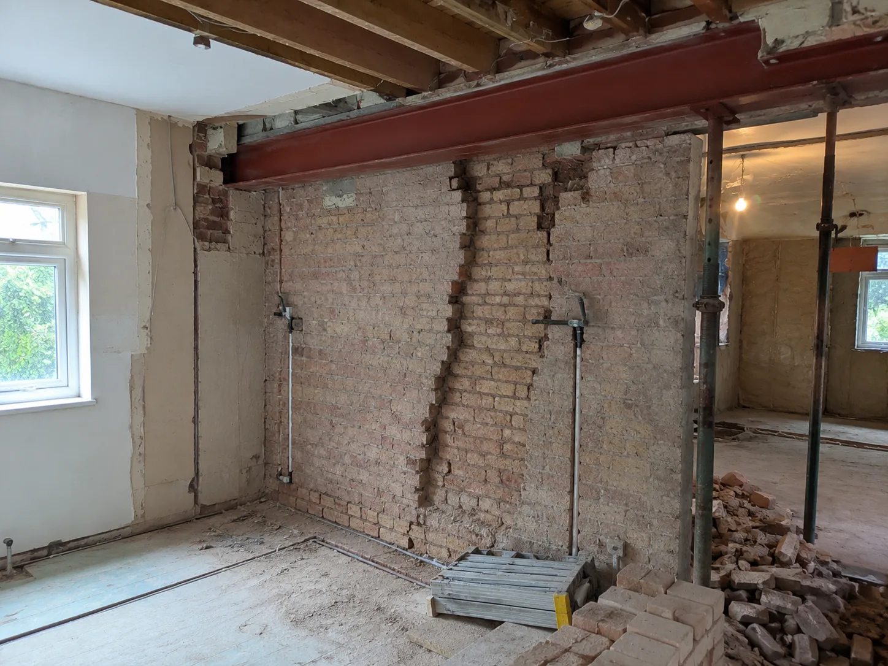
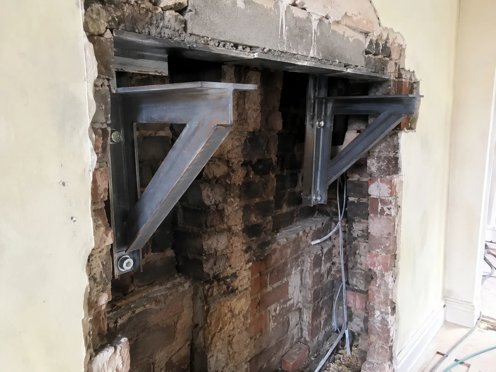
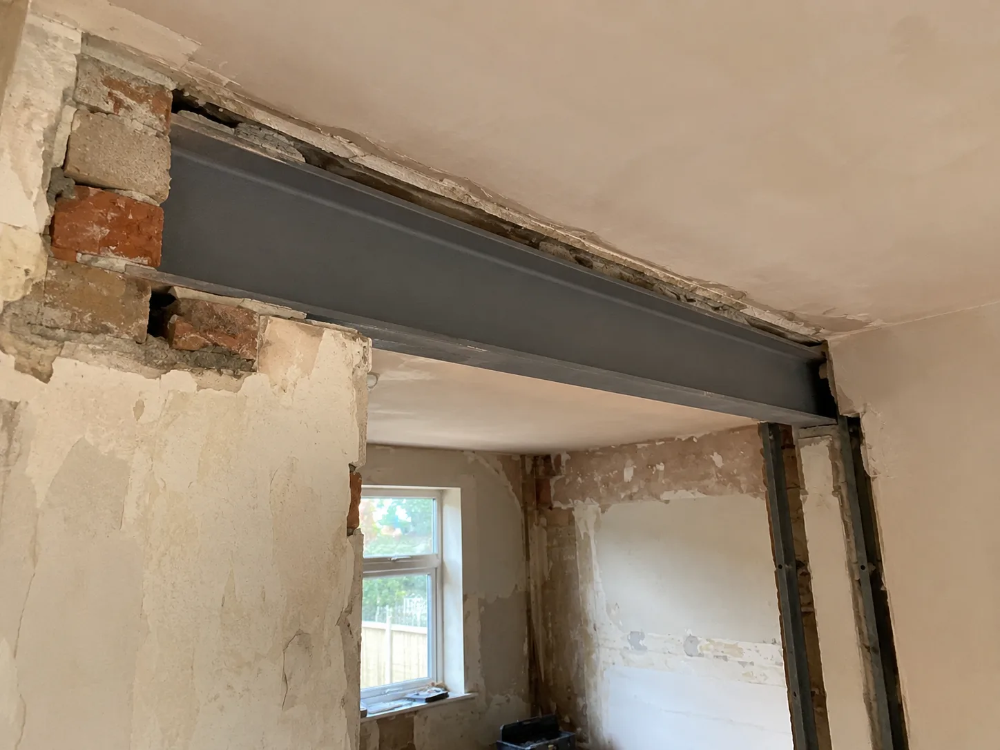

Ground-floor removal
Taking out the breast in a living room or kitchen while the breast above and the stack stay. The remaining masonry needs support, usually steel beams, sometimes gallows brackets.
Structural calculations for removing chimney breasts: steel beams or gallows brackets, support for the remaining stack, and Building Control approval across South West London.
Chartered structural engineer support for single, double and full-height chimney breast removals.
Panoptic Design provides structural engineering support for residential and property projects, including calculations for Building Control and builder use.

A chimney breast is not just a feature. It is a column of brickwork that usually carries the breast above it and, at the top, the stack through the roof. Take part of it out and whatever remains has to be supported properly. Tell us which floors the breast is coming out on and whether the stack is staying, and we will advise whether steel beams or gallows brackets are the right answer, what Building Control will want to see, and what your builder needs to price the work.
Almost always, because whatever brickwork remains above the removed section has to be carried by something designed to do it. These are the situations we deal with most.
Taking out the breast in a living room or kitchen while the breast above and the stack stay. The remaining masonry needs support, usually steel beams, sometimes gallows brackets.
Removing the breast in a bedroom leaves the stack in the loft unsupported. We design the support, typically steels or brackets in the loft, and provide the calculations.
A full-height removal below a retained stack concentrates all the remaining load at roof level. The support design and its bearings need particular care, and calculations.
Where breasts sit back-to-back on a shared wall (common in terraces), removing one side affects how the wall and the neighbour’s side behave. We assess and design accordingly.
Most people keep the stack for the roofline (and planning simplicity). The retained stack must be supported in the loft. This is the detail Building Control looks at hardest.
Chimney breasts often sit on the wall shared with next door. Removing one is usually notifiable work under the Party Wall Act. We flag clearly whether that applies to yours.
If your builder has asked for “the calcs” or a gallows bracket design before they can price or start, that is exactly what we provide: clear and Building Control-ready.
Steel beams or gallows brackets? It depends on what remains above, the condition of the wall, and what your Building Control officer will accept.

We scale the work to your project and give practical guidance for homeowners, builders and property professionals. Tell us what you are planning and we will be clear about what is actually needed.
Structural calculations for removing a chimney breast on any floor, covering the support and its bearings.
Where brackets are appropriate and the wall can take them, we design and justify them. Where they are not, we say so and design the steel instead.
Steel beams sized to carry the remaining breast and stack, with connections, padstones and bearings checked.
Design for the retained stack in the loft after a removal below: the detail that decides whether the job passes sign-off.
Calculations prepared in a format suitable for Building Control approval, for brackets or beams alike.
Clear flagging of when removal on a shared wall is notifiable under the Party Wall Act, so nothing surprises you mid-project.
A simple, low-fuss path from first enquiry to the information your builder or Building Control needs. It follows the same measured structural engineering process we use across our projects.
Tell us about the chimney
Which floors the breast is coming out on, whether the stack is staying, and your postcode. If the breast backs onto next door’s, mention that too.
Share photos, plans or measurements if available
Photos of the breast on each floor and in the loft are ideal. If you do not have these yet, that is fine. We will tell you what we need.
We assess the right support and what approval needs
We advise whether gallows brackets are viable or steels are needed, whether a site visit is required, and whether party wall notice applies.
You receive what you need to move forward
Calculations, and drawings where appropriate, set out clearly for your builder and Building Control, so the project can move forward safely and correctly.
What you receive: a clear calculation pack your builder can price from and Building Control can approve.

Panoptic Design helps homeowners, builders and property professionals across South West London, including Putney, Wandsworth, Fulham, Wimbledon, Richmond and Hammersmith.
We also cover the wider London area where suitable. Send your postcode with a short description of the project and we will confirm whether we can help and what the next step looks like.
A measured, practical approach for people who want a structural engineer to confirm the safest way forward, not to be sold more than they need.
Structural calculations and advice for chimney breast removals, the supports that replace them and the stacks that remain.
Real experience with the chimney removals, wall openings and alterations homeowners and builders take on across London’s period housing stock.
Plain explanations of brackets versus beams, what Building Control will accept, and whether the Party Wall Act applies to your job.
We work alongside homeowners, builders, architects and property professionals so everyone has the information they need.
Our aim is to help your project move forward safely and correctly, with the right calculations and advice at the right time.
The goal: a full-width room and a fireplace wall you can actually use, with the structure above properly supported and signed off.

If yours is not here, send it via the form or on WhatsApp. We read every enquiry.
Yes, in almost every case. A chimney breast usually carries the masonry above it: the breast on the floor above and the stack through the roof. Removing part of it means the remainder has to be supported by something designed to carry it, and Building Control will want calculations proving the support works. The rare exception is removing everything from top to bottom including the stack, and even then the work needs Building Control sign-off.
Gallows brackets are steel triangles fixed to the wall to carry the remaining breast or stack above a removal. They are allowed in some circumstances (broadly, where the wall is in good condition, thick enough, and the remaining masonry is modest), but many Building Control bodies restrict or refuse them, especially on party walls or under heavier stacks. We tell you honestly whether brackets are viable for your situation; where they are not, we design a steel beam instead.
Yes. This is the most common arrangement, because keeping the stack preserves the roofline and avoids planning complications. The retained stack must be properly supported in the loft, usually on steels or brackets designed for the job. That support design is the heart of the calculation pack we prepare.
Often, yes. In terraced and semi-detached houses the chimney breast frequently sits on the wall shared with next door, and removing it, or fixing brackets or beams into that wall, is usually notifiable under the Party Wall Act. We flag clearly whether your project is likely to be notifiable so you can serve notice early and avoid delays. The notice itself is served by you or a party wall surveyor rather than by us.
Often, yes. Clear photos of the breast on each floor and in the loft, plus rough measurements, can be enough to advise and sometimes to design from. In other cases a site visit is needed first, for example to confirm the wall’s condition where brackets are being considered. Send what you have and we will tell you honestly what is needed.
Structural calculations showing the remaining masonry is properly supported (the beam or bracket design, its fixings and bearings), usually with a drawing or sketch showing the arrangement. Your builder books the inspections; our pack is prepared so it can be submitted directly and approved without back-and-forth.
Yes. Putney, Wandsworth, Fulham, Wimbledon, Richmond, Hammersmith and the wider South West London area are part of our regular coverage, and we cover the wider London area where suitable. Send your postcode with a short description of the project and we will confirm whether we can help.
Unedited Google reviews from homeowners we’ve helped with chimneys, cracking and urgent structural questions.
“Vijay came recommended by my builder and was very helpful in investigating some wall cracking and a chimney in need of repairs. He provided a thorough report and made himself available to discuss the issue with my neighbour if needed.”
“Vijay was absolutely amazing and we cannot recommend Panoptic Design more highly. Our previous structural engineer fell ill and Vijay was super responsive to our call, managing a site visit within a few days.”
“Superb engineer. Very useful with creative problem-solving and always provides great detailed drawings. Vijay is always on my list of go-to guys.”
Three quick steps: the chimney, the property, your details. Your answers arrive with the enquiry so we can reply with the right information first time. Prefer to send photos directly? Use WhatsApp.
Prefer to skip the questions? Email info@panopticdesign.co.uk or enquire on WhatsApp.
Best if you already have photos of the breast on each floor and in the loft. Add your postcode first, then send photos in WhatsApp.
Send your postcode, photos or plans today and we’ll confirm the right next step.